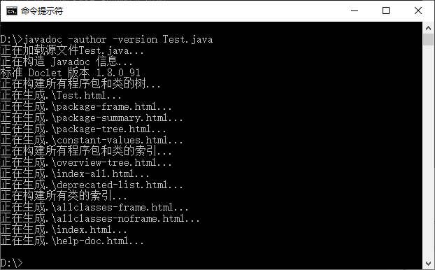
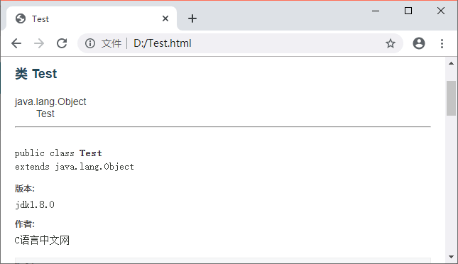
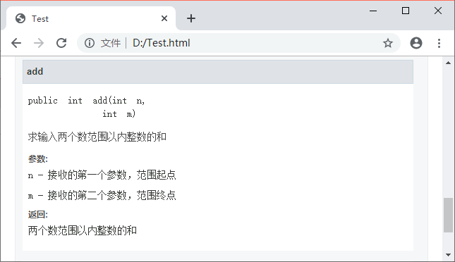
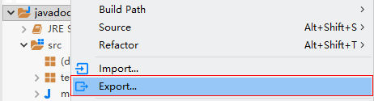
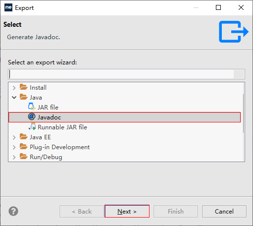
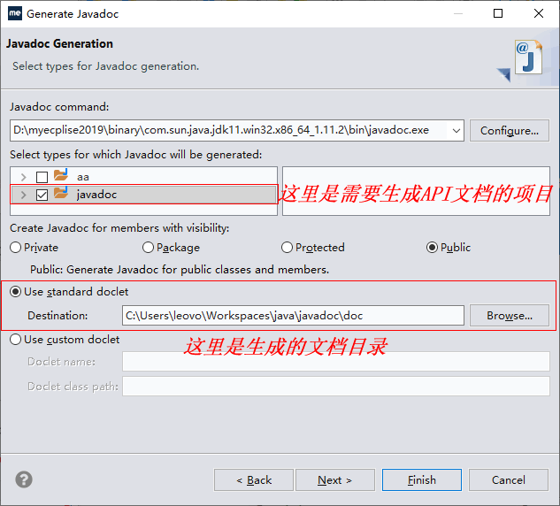
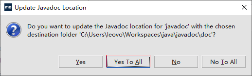
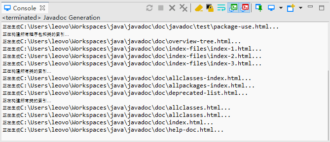
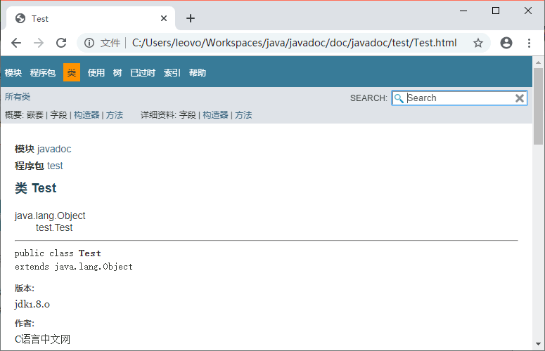
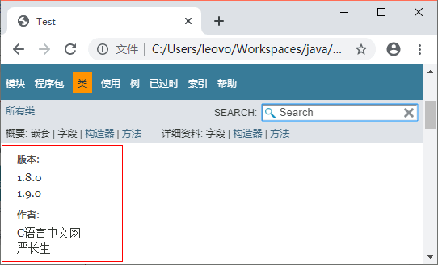

首页 > Java教程 > Java程序设计基础
Javadoc（文档注释）详解
Java 支持 3 种注释，分别是单行注释、多行注释和文档注释。文档注释以
文档注释只放在类、接口、成员变量、方法之前，因为 Javadoc 只处理这些地方的文档注释，而忽略其它地方的文档注释。
Javadoc 是 Sun 公司提供的一种工具，它可以从程序源代码中抽取类、方法、成员等注释，然后形成一个和源代码配套的 API 帮助文档。也就是说，只要在编写程序时以一套特定的标签注释，在程序编写完成后，通过 Javadoc 就形成了程序的 API 帮助文档。
对两种标签格式的说明：
Javadoc 标签注意事项：
在 cmd（命令提示符）中输入
打开 Test.java 文件存储的位置，会发现多出了一个 Test.html 文档。打开文档，文档页面如图 2 和图 3 所示。
注意：以上没有考虑编码格式的问题，注释中有汉字可能会乱码。使用
2）在项目名处单击鼠标右键，然后选择
3）在弹出窗口中选择 Java 文件夹，点击 Java 文件夹下面的 Javadoc，然后点击“Next”，如图 5 所示。
4）选择你要生成 Javadoc 的项目，并更改你想保存的 API 帮助文档地址（默认为工程目录下，建议不要修改）。点击“Finish”，如图 6 所示。
5）点击“Finish”之后会问是否更新 Javadoc 文件的位置，只需要点击“Yes To All”即可，如图 7 所示。
6）这时可以看到控制台输出生成 Javadoc 的信息，如图 8 所示。
7）打开保存的文件夹，找到 Test.html 文件并打开，如图 9 所示。
以上就是使用 MyEclipse 简单建立一个 API 帮助文档的过程。
例如把上面 Test 类改为以下代码：
/**开头，并以*/结束，可以通过 Javadoc 生成 API 帮助文档，Java 帮助文档主要用来说明类、成员变量和方法的功能。文档注释只放在类、接口、成员变量、方法之前，因为 Javadoc 只处理这些地方的文档注释，而忽略其它地方的文档注释。
Javadoc 是 Sun 公司提供的一种工具，它可以从程序源代码中抽取类、方法、成员等注释，然后形成一个和源代码配套的 API 帮助文档。也就是说，只要在编写程序时以一套特定的标签注释，在程序编写完成后，通过 Javadoc 就形成了程序的 API 帮助文档。
API 帮助文档相当于产品说明书，而说明书只需要介绍那些供用户使用的部分，所以 Javadoc 默认只提取 public、protected 修饰的部分。如果要提取 private 修饰的部分，需要使用 -private。
Javadoc标签
Javadoc 工具可以识别文档注释中的一些特殊标签，这些标签一般以@开头，后跟一个指定的名字，有的也以{@开头，以}结束。Javadoc 可以识别的标签如下表所示：| 标签 | 描述 | 示例 |
|---|---|---|
| @author | 标识一个类的作者，一般用于类注释 | @author description |
| @deprecated | 指名一个过期的类或成员，表明该类或方法不建议使用 | @deprecated description |
| {@docRoot} | 指明当前文档根目录的路径 | Directory Path |
| @exception | 可能抛出异常的说明，一般用于方法注释 | @exception exception-name explanation |
| {@inheritDoc} | 从直接父类继承的注释 | Inherits a comment from the immediate surperclass. |
| {@link} | 插入一个到另一个主题的链接 | {@link name text} |
| {@linkplain} | 插入一个到另一个主题的链接，但是该链接显示纯文本字体 | Inserts an in-line link to another topic. |
| @param | 说明一个方法的参数，一般用于方法注释 | @param parameter-name explanation |
| @return | 说明返回值类型，一般用于方法注释，不能出现再构造方法中 | @return explanation |
| @see | 指定一个到另一个主题的链接 | @see anchor |
| @serial | 说明一个序列化属性 | @serial description |
| @serialData | 说明通过 writeObject() 和 writeExternal() 方法写的数据 | @serialData description |
| @serialField | 说明一个 ObjectStreamField 组件 | @serialField name type description |
| @since | 说明从哪个版本起开始有了这个函数 | @since release |
| @throws | 和 @exception 标签一样. | The @throws tag has the same meaning as the @exception tag. |
| {@value} | 显示常量的值，该常量必须是 static 属性。 | Displays the value of a constant, which must be a static field. |
| @version | 指定类的版本，一般用于类注释 | @version info |
对两种标签格式的说明：
-
@tag 格式的标签（不被
{ }包围的标签）为块标签，只能在主要描述（类注释中对该类的详细说明为主要描述）后面的标签部分（如果块标签放在主要描述的前面，则生成 API 帮助文档时会检测不到主要描述）。 -
{@tag} 格式的标签（由
{ }包围的标签）为内联标签，可以放在主要描述中的任何位置或块标签的注释中。
Javadoc 标签注意事项：
- Javadoc 标签必须从一行的开头开始，否则将被视为普通文本。
- 一般具有相同名称的标签放在一起。
- Javadoc 标签区分大小写，代码中对于大小写错误的标签不会发生编译错误，但是在生成 API 帮助文档时会检测不到该注释内容。
Javadoc命令
Javadoc 用法格式如下：javadoc [options] [packagenames] [sourcefiles]
对格式的说明：- options 表示 Javadoc 命令的选项；
- packagenames 表示包名；
- sourcefiles 表示源文件名。
在 cmd（命令提示符）中输入
javadoc -help就可以看到 Javadoc 的用法和选项（前提是安装配置了JDK），下面列举 Javadoc 命令的常用选项：| 名称 | 说明 |
|---|---|
| -public | 仅显示 public 类和成员 |
| -protected | 显示 protected/public 类和成员（默认值） |
| -package | 显示 package/protected/public 类和成员 |
| -private | 显示所有类和成员 |
| -d <directory> | 输出文件的目标目录 |
| -version | 包含 @version 段 |
| -author | 包含 @author 段 |
| -splitindex | 将索引分为每个字母对应一个文件 |
| -windowtitle <text> | 文档的浏览器窗口标题 |
DOS命令生成API帮助文档
新建一个空白记事本，输入下列代码：
/**
* @author C语言中文网
* @version jdk1.8.0
*/
public class Test{
/**
* 求输入两个参数范围以内整数的和
* @param n 接收的第一个参数，范围起点
* @param m 接收的第二个参数，范围终点
* @return 两个参数范围以内整数的和
*/
public int add(int n, int m) {
int sum = 0;
for (int i = n; i <= m; i++) {
sum = sum + i;
}
return sum;
}
}
将文件命名为 Test.java，打开 cmd 窗口，输入 javadoc -author -version Test.java命令。如图 1 所示。

图 1 cmd 运行窗口
图 1 cmd 运行窗口
打开 Test.java 文件存储的位置，会发现多出了一个 Test.html 文档。打开文档，文档页面如图 2 和图 3 所示。

图 2 Student.html 页面（1）
图 2 Student.html 页面（1）

图 3 Student.html 页面（2）
图 3 Student.html 页面（2）
注意：以上没有考虑编码格式的问题，注释中有汉字可能会乱码。使用
javadoc -encoding UTF-8 -charset UTF-8 Test.java会解决编码问题。MyEclipse生成API帮助文档
1）在 MyEclipse 中新建一个 Test 类，代码如下：
package test;
/**
* @author C语言中文网
* @version jdk1.8.0
*/
public class Test {
public static void main(String[] args) {
/**
* 这是一个输出语句
*/
System.out.println("C语言中文网Java教程访问地址：http://c.biancheng.net/java/");
}
}
注意：代码 9~11 行没有放在类、成员变量或方法之前，所以 Javadoc 会忽略这个注释。2）在项目名处单击鼠标右键，然后选择
Export...，如图 4 所示。

图 4
图 4
3）在弹出窗口中选择 Java 文件夹，点击 Java 文件夹下面的 Javadoc，然后点击“Next”，如图 5 所示。

图 5
图 5
4）选择你要生成 Javadoc 的项目，并更改你想保存的 API 帮助文档地址（默认为工程目录下，建议不要修改）。点击“Finish”，如图 6 所示。

图 6
图 6
5）点击“Finish”之后会问是否更新 Javadoc 文件的位置，只需要点击“Yes To All”即可，如图 7 所示。

图 7
图 7
6）这时可以看到控制台输出生成 Javadoc 的信息，如图 8 所示。

图 8
图 8
7）打开保存的文件夹，找到 Test.html 文件并打开，如图 9 所示。

图 9
图 9
以上就是使用 MyEclipse 简单建立一个 API 帮助文档的过程。
文档注释的格式
在编写文档注释的过程中，有时需要添加 HTML 标签，比如：需要换行时，应该使用<br>，而不是一个回车符；需要分段时，应该使用<p>。例如把上面 Test 类改为以下代码：
package test;
/**
* @author C语言中文网<br>
* 严长生
* @version 1.8.0<br>
* 1.9.0
*/
public class Test {
public static void main(String[] args) {
System.out.println("C语言中文网Java教程访问地址：http://c.biancheng.net/java/");
}
}
帮助文档格式如图 10 所示。

图 10
Javadoc 并不是将代码中的文档注释直接复制到帮助文档的 HTML 文件中，而是读取每一行后，删除前面的图 10
*号及*以前的空格再输入到 HTML 文档。
/**
* first line.
******* second line.
* third line.
*/
first line. <br>
second line. <br>
third line.
*号允许连续使用多个，其效果和使用一个*号一样，但多个*前不能有其他字符分隔，否则分隔符及后面的*号都将作为文档的内容。关注公众号「站长严长生」，在手机上阅读所有教程，随时随地都能学习。内含一款搜索神器，免费下载全网书籍和视频。

微信扫码关注公众号